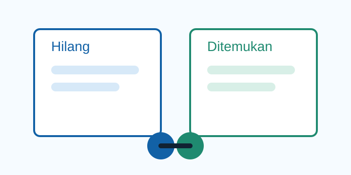

Layanan resmi kampus
Barangmu mungkin lebih dekat dari yang kamu kira.
Campus L&F membantu warga kampus mencari, melaporkan, dan mengambil barang dengan proses yang aman serta transparan.
Terbuka untuk mahasiswa, dosen, staf, dan tenaga kependidikan.

klaim selesai dalam 48 jam
Posko terbuka hari ini · 08.00–21.00
Katalog terbaru